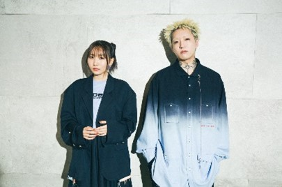
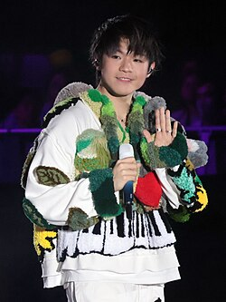
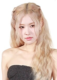

Yoasobi
Yoasobi is a j-pop duo formed in 2019 It consists of musician and record producer Ayase and singer-songwriter Lilas Ikuta, under the moniker Ikura. With the slogan "novel into music", the duo originally released songs based on selected fictional stories posted on Monogatary.com , a social media website for creative writing operated by Sony Music Entertainment Japan.
Keung to
Keung to is a Hong Kong singer, actor, and a member of the Hong Kong boy band group Mirror. He rose to fame after winning ViuTV's reality talent competition Good Night Show - King Maker in 2018. Keung made his solo debut in June 2019 with the single "No. 1 Seed"

Jeremy Lau Ying-ting
Jeremy Lau Ying-ting known professionally as Jer, is a Hong Kong singer, actor, and a member of the Hong Kong boy group Mirror. Apart from his group activities, Jer has also pursued a solo singing career, winning Best New Performer at the Metro Hit Awards, the Ultimate Song Chart Awards, the Chinese Gold Song Awards, and the Chill Club 20/21 Awards.

Ian Chan Cheuk-yin
Ian Chan Cheuk-yin, born on June 9, 1993, in Hong Kong, is a multifaceted artist known for his contributions to music and sports. Chan gained prominence as a member of the Hong Kong boy band MIRROR, which debuted in 2018. He has since pursued a solo music career, showcasing his talents as a singer-songwriter.
